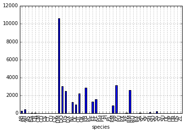

Starting With Data
Overview
Teaching: 30 min
Exercises: 30 minQuestions
How can I import data in Python?
What is Pandas?
Why should I use Pandas to work with data?
Objectives
Navigate the workshop directory and download a dataset.
Explain what a library is and what libraries are used for.
Describe what the Python Data Analysis Library (Pandas) is.
Load the Python Data Analysis Library (Pandas).
Read tabular data into Python using Pandas.
Describe what a DataFrame is in Python.
Access and summarize data stored in a DataFrame.
Define indexing as it relates to data structures.
Perform basic mathematical operations and summary statistics on data in a Pandas DataFrame.
Create simple plots.
Working With Pandas DataFrames in Python
We can automate the process of performing data manipulations in Python. It’s efficient to spend time building the code to perform these tasks because once it’s built, we can use it over and over on different datasets that use a similar format. This makes our data manipulation processes reproducible. We can also share our code with colleagues and they can replicate the same analysis starting with the same original data.
Starting in the same spot
To help the lesson run smoothly, let’s ensure everyone is in the same directory. This should help us avoid path and file name issues. At this time please navigate to the workshop directory. If you are working in Jupyter Notebook be sure that you start your notebook in the workshop directory.
Our Data
For this lesson, we will be using the Portal Teaching data, a subset of the data from Ernst et al. Long-term monitoring and experimental manipulation of a Chihuahuan Desert ecosystem near Portal, Arizona, USA.
We will be using files from the Portal Project Teaching Database.
This section will use the surveys.csv file that can be downloaded here:
https://ndownloader.figshare.com/files/2292172
We are studying the species and weight of animals caught in sites in our study
area. The dataset is stored as a .csv file: each row holds information for a
single animal, and the columns represent:
| Column | Description |
|---|---|
| record_id | Unique id for the observation |
| month | month of observation |
| day | day of observation |
| year | year of observation |
| plot_id | ID of a particular site |
| species_id | 2-letter code |
| sex | sex of animal (“M”, “F”) |
| hindfoot_length | length of the hindfoot in mm |
| weight | weight of the animal in grams |
The first few rows of our first file look like this:
record_id,month,day,year,plot_id,species_id,sex,hindfoot_length,weight
1,7,16,1977,2,NL,M,32,
2,7,16,1977,3,NL,M,33,
3,7,16,1977,2,DM,F,37,
4,7,16,1977,7,DM,M,36,
5,7,16,1977,3,DM,M,35,
6,7,16,1977,1,PF,M,14,
7,7,16,1977,2,PE,F,,
8,7,16,1977,1,DM,M,37,
9,7,16,1977,1,DM,F,34,
About Libraries
A library in Python contains a set of tools (called functions) that perform tasks on our data. Importing a library is like getting a piece of lab equipment out of a storage locker and setting it up on the bench for use in a project. Once a library is set up, it can be used or called to perform the task(s) it was built to do.
Pandas in Python
One of the best options for working with tabular data in Python is to use the Python Data Analysis Library (a.k.a. Pandas). The Pandas library provides data structures, produces high quality plots with matplotlib and integrates nicely with other libraries that use NumPy (which is another Python library) arrays.
Python doesn’t load all of the libraries available to it by default. We have to
add an import statement to our code in order to use library functions. To import
a library, we use the syntax import libraryName. If we want to give the
library a nickname to shorten the command, we can add as nickNameHere. An
example of importing the pandas library using the common nickname pd is below.
import pandas as pd
Each time we call a function that’s in a library, we use the syntax
LibraryName.FunctionName. Adding the library name with a . before the
function name tells Python where to find the function. In the example above, we
have imported Pandas as pd. This means we don’t have to type out pandas each
time we call a Pandas function.
Reading CSV Data Using Pandas
We will begin by locating and reading our survey data which are in CSV format. CSV stands for
Comma-Separated Values and is a common way to store formatted data. Other symbols may also be used, so
you might see tab-separated, colon-separated or space separated files. pandas can work with each of these
types of separators, as it allows you to specify the appropriate separator for your data.
CSV files (and other -separated value file types) make it easy to share data, and can be imported and exported
from many applications, including Microsoft Excel. For more details on CSV
files, see the Data Organisation in Spreadsheets lesson.
We can use Pandas’ read_csv function to pull the file directly into a DataFrame.
So What’s a DataFrame?
A DataFrame is a 2-dimensional data structure that can store data of different
types (including characters, integers, floating point values, factors and more)
in columns. It is similar to a spreadsheet or an SQL table or the data.frame in
R. A DataFrame always has an index (0-based). An index refers to the position of
an element in the data structure.
# Note that pd.read_csv is used because we imported pandas as pd
pd.read_csv("data/surveys.csv")
The above command yields the output below:
record_id month day year plot_id species_id sex hindfoot_length weight
0 1 7 16 1977 2 NL M 32.0 NaN
1 2 7 16 1977 3 NL M 33.0 NaN
2 3 7 16 1977 2 DM F 37.0 NaN
3 4 7 16 1977 7 DM M 36.0 NaN
4 5 7 16 1977 3 DM M 35.0 NaN
... ... ... ... ... ... ... ... ... ...
35544 35545 12 31 2002 15 AH NaN NaN NaN
35545 35546 12 31 2002 15 AH NaN NaN NaN
35546 35547 12 31 2002 10 RM F 15.0 14.0
35547 35548 12 31 2002 7 DO M 36.0 51.0
35548 35549 12 31 2002 5 NaN NaN NaN NaN
[35549 rows x 9 columns]
We can see that there were 35,549 rows parsed. Each row has 9
columns. The first column is the index of the DataFrame. The index is used to
identify the position of the data, but it is not an actual column of the DataFrame.
It looks like the read_csv function in Pandas read our file properly. However,
we haven’t saved any data to memory so we can work with it. We need to assign the
DataFrame to a variable. Remember that a variable is a name for a value, such as x,
or data. We can create a new object with a variable name by assigning a value to it using =.
Let’s call the imported survey data surveys_df:
surveys_df = pd.read_csv("data/surveys.csv")
Note that Python does not produce any output on the screen when you assign the imported DataFrame to a variable.
We can view the value of the surveys_df
object by typing its name into the Python command prompt.
surveys_df
which prints contents like above.
Note: if the output is too wide to print on your narrow terminal window, you may see something slightly different as the large set of data scrolls past. You may see simply the last column of data:
17 NaN
18 NaN
19 NaN
20 NaN
21 NaN
22 NaN
23 NaN
24 NaN
25 NaN
26 NaN
27 NaN
28 NaN
29 NaN
... ...
35519 36.0
35520 48.0
35521 45.0
35522 44.0
35523 27.0
35524 26.0
35525 24.0
35526 43.0
35527 NaN
35528 25.0
35529 NaN
35530 NaN
35531 43.0
35532 48.0
35533 56.0
35534 53.0
35535 42.0
35536 46.0
35537 31.0
35538 68.0
35539 23.0
35540 31.0
35541 29.0
35542 34.0
35543 NaN
35544 NaN
35545 NaN
35546 14.0
35547 51.0
35548 NaN
[35549 rows x 9 columns]
Don’t worry: all the data is there! You can confirm this by scrolling upwards, or by
looking at the [# of rows x # of columns] block at the end of the output.
You can also use surveys_df.head() to view only the first few rows of the dataset in an output
that is easier to fit in one window. After doing this, you can see that pandas has neatly formatted
the data to fit our screen:
surveys_df.head() # The head() method displays the first several lines of a file. It
# is discussed below.
record_id month day year plot_id species_id sex hindfoot_length \
5 6 7 16 1977 1 PF M 14.0
6 7 7 16 1977 2 PE F NaN
7 8 7 16 1977 1 DM M 37.0
8 9 7 16 1977 1 DM F 34.0
9 10 7 16 1977 6 PF F 20.0
weight
5 NaN
6 NaN
7 NaN
8 NaN
9 NaN
Exploring Our Species Survey Data
Again, we can use the type function to see what kind of thing surveys_df is:
type(surveys_df)
<class 'pandas.core.frame.DataFrame'>
As expected, it’s a DataFrame (or, to use the full name that Python uses to refer
to it internally, a pandas.core.frame.DataFrame).
What kind of things does surveys_df contain? DataFrames have an attribute
called dtypes that answers this:
surveys_df.dtypes
record_id int64
month int64
day int64
year int64
plot_id int64
species_id object
sex object
hindfoot_length float64
weight float64
dtype: object
All the values in a single column have the same type. For example, values in the month
column have type int64, which is a kind of integer. Cells in the month column cannot have
fractional values, but values in weight and hindfoot_length columns can, because they
have type float64. The object type doesn’t have a very helpful name, but in
this case it represents strings (such as ‘M’ and ‘F’ in the case of sex).
pandas and base Python use slightly different names for data types. More on this is in the table below:
| Pandas Type | Native Python Type | Description |
|---|---|---|
| object | string | The most general dtype. Will be assigned to your column if column has mixed types (numbers and strings). |
| int64 | int | Numeric characters. 64 refers to the memory allocated to hold this character. |
| float64 | float | Numeric characters with decimals. If a column contains numbers and NaNs (see below), pandas will default to float64, in case your missing value has a decimal. |
| datetime64, timedelta[ns] | N/A (but see the datetime module in Python’s standard library) | Values meant to hold time data. Look into these for time series experiments. |
# Make sure pandas is loaded
import pandas as pd
# Note that pd.read_csv is used because we imported pandas as pd
surveys_df = pd.read_csv("data/surveys.csv")
Remember that we can check the type of an object like this:
type(surveys_df)
pandas.core.frame.DataFrame
Next, let’s look at the structure of our surveys_df data. In pandas, we can check
the type of one column in a DataFrame using the syntax
dataframe_name['column_name'].dtype:
surveys_df['sex'].dtype
dtype('O')
A type ‘O’ just stands for “object” which in pandas is a string (text).
surveys_df['record_id'].dtype
dtype('int64')
The type int64 tells us that pandas is storing each value within this column
as a 64 bit integer. We can use the dataframe_name.dtypes command to view the data type
for each column in a DataFrame (all at once).
surveys_df.dtypes
which returns:
record_id int64
month int64
day int64
year int64
plot_id int64
species_id object
sex object
hindfoot_length float64
weight float64
dtype: object
Note that most of the columns in our survey_df data are of type int64. This means
that they are 64 bit integers. But the weight column is a floating point value
which means it contains decimals. The species_id and sex columns are objects which
means they contain strings.
We can also modify the format of values within our data, if
we want. For instance, we could convert the record_id field to floating point
values.
# Convert the record_id field from an integer to a float
surveys_df['record_id'] = surveys_df['record_id'].astype('float64')
surveys_df['record_id'].dtype
dtype('float64')
Changing Types
Try converting the column
plot_idto floats usingsurveys_df['plot_id'].astype("float")Next try converting
weightto an integer. What goes wrong here? What is pandas telling you? We will talk about some solutions to this later.
Useful Ways to View DataFrame Objects in Python
There are many ways to summarize and access the data stored in DataFrames, using attributes and methods provided by the DataFrame object.
Attributes are features of an object. For example, the shape attribute will output
the size (the number of rows and columns) of an object. To access an attribute,
use the DataFrame object name followed by the attribute name df_object.attribute.
For example, using the DataFrame surveys_df and attribute columns, an index
of all the column names in the DataFrame can be accessed with surveys_df.columns.
Methods are like functions, but they only work on particular kinds of objects. As
an example, the head() method works on DataFrames. Methods are called in a
similar fashion to attributes, using the syntax df_object.method(). Using
surveys_df.head() gets the first few rows in the DataFrame surveys_df
using the head() method. With a method, we can supply extra information
in the parentheses to control behaviour.
Let’s look at the data using these.
Challenge - DataFrames
Using our DataFrame
surveys_df, try out the attributes & methods below to see what they return.
surveys_df.columns
surveys_df.shapeTake note of the output ofshape- what format does it return the shape of the DataFrame in?HINT: More on tuples, here.
surveys_df.head()Also, what doessurveys_df.head(15)do?surveys_df.tail()
Calculating Statistics From Data In A Pandas DataFrame
We’ve read our data into Python. Next, let’s perform some quick summary statistics to learn more about the data that we’re working with. We might want to know how many animals were collected in each site, or how many of each species were caught. We can perform summary stats quickly using groups. But first we need to figure out what we want to group by.
Let’s begin by exploring our data:
# Look at the column names
surveys_df.columns
which returns:
Index(['record_id', 'month', 'day', 'year', 'plot_id', 'species_id', 'sex',
'hindfoot_length', 'weight'],
dtype='object')
Let’s get a list of all the species. The pd.unique function tells us all of
the unique values in the species_id column.
pd.unique(surveys_df['species_id'])
which returns:
array(['NL', 'DM', 'PF', 'PE', 'DS', 'PP', 'SH', 'OT', 'DO', 'OX', 'SS',
'OL', 'RM', nan, 'SA', 'PM', 'AH', 'DX', 'AB', 'CB', 'CM', 'CQ',
'RF', 'PC', 'PG', 'PH', 'PU', 'CV', 'UR', 'UP', 'ZL', 'UL', 'CS',
'SC', 'BA', 'SF', 'RO', 'AS', 'SO', 'PI', 'ST', 'CU', 'SU', 'RX',
'PB', 'PL', 'PX', 'CT', 'US'], dtype=object)
Challenge - Statistics
Create a list of unique site ID’s (“plot_id”) found in the surveys data. Call it
site_names. How many unique sites are there in the data? How many unique species are in the data?What is the difference between
len(site_names)andsurveys_df['plot_id'].nunique()?
Groups in Pandas
We often want to calculate summary statistics grouped by subsets or attributes within fields of our data. For example, we might want to calculate the average weight of all individuals per site.
We can calculate basic statistics for all records in a single column using the syntax below:
surveys_df['weight'].describe()
gives output
count 32283.000000
mean 42.672428
std 36.631259
min 4.000000
25% 20.000000
50% 37.000000
75% 48.000000
max 280.000000
Name: weight, dtype: float64
We can also extract one specific metric if we wish:
surveys_df['weight'].min()
surveys_df['weight'].max()
surveys_df['weight'].mean()
surveys_df['weight'].std()
surveys_df['weight'].count()
But if we want to summarize by one or more variables, for example sex, we can
use Pandas’ .groupby method. Once we’ve created a groupby DataFrame, we
can quickly calculate summary statistics by a group of our choice.
# Group data by sex
grouped_data = surveys_df.groupby('sex')
The pandas function describe will return descriptive stats including: mean,
median, max, min, std and count for a particular column in the data. Pandas’
describe function will only return summary values for columns containing
numeric data.
# Summary statistics for all numeric columns by sex
grouped_data.describe()
# Provide the mean for each numeric column by sex
grouped_data.mean()
grouped_data.mean() OUTPUT:
record_id month day year plot_id \
sex
F 18036.412046 6.583047 16.007138 1990.644997 11.440854
M 17754.835601 6.392668 16.184286 1990.480401 11.098282
hindfoot_length weight
sex
F 28.836780 42.170555
M 29.709578 42.995379
The groupby command is powerful in that it allows us to quickly generate
summary stats.
Challenge - Summary Data
- How many recorded individuals are female
Fand how many maleM?- What happens when you group by two columns using the following syntax and then calculate mean values?
grouped_data2 = surveys_df.groupby(['plot_id', 'sex'])grouped_data2.mean()- Summarize weight values for each site in your data. HINT: you can use the following syntax to only create summary statistics for one column in your data.
by_site['weight'].describe()Did you get #3 right?
A Snippet of the Output from challenge 3 looks like:
site 1 count 1903.000000 mean 51.822911 std 38.176670 min 4.000000 25% 30.000000 50% 44.000000 75% 53.000000 max 231.000000 ...
Quickly Creating Summary Counts in Pandas
Let’s next count the number of samples for each species. We can do this in a few
ways, but we’ll use groupby combined with a count() method.
# Count the number of samples by species
species_counts = surveys_df.groupby('species_id')['record_id'].count()
print(species_counts)
Or, we can also count just the rows that have the species “DO”:
surveys_df.groupby('species_id')['record_id'].count()['DO']
Challenge - Make a list
What’s another way to create a list of species and associated
countof the records in the data? Hint: you can performcount,min, etc. functions on groupby DataFrames in the same way you can perform them on regular DataFrames.
Basic Math Functions
If we wanted to, we could apply a mathmatical operation like addition or division on an entire column of our data. For example, let’s multiply all weight values by 2.
# Multiply all weight values by 2
surveys_df['weight']*2
A more practical use of this might be to normalize the data according to a mean, area, or some other value calculated from our data.
Quick & Easy Plotting Data Using Pandas
We can plot our summary stats using Pandas, too.
# Make sure figures appear inline in Ipython Notebook
%matplotlib inline
# Create a quick bar chart
species_counts.plot(kind='bar');
 Count per species site
We can also look at how many animals were captured in each site:
total_count = surveys_df.groupby('plot_id')['record_id'].nunique()
# Let's plot that too
total_count.plot(kind='bar');
Challenge - Plots
- Create a plot of average weight across all species per site.
- Create a plot of total males versus total females for the entire dataset.
Summary Plotting Challenge
Create a stacked bar plot, with weight on the Y axis, and the stacked variable being sex. The plot should show total weight by sex for each site. Some tips are below to help you solve this challenge:
- For more information on pandas plots, see pandas’ documentation page on visualization.
- You can use the code that follows to create a stacked bar plot but the data to stack need to be in individual columns. Here’s a simple example with some data where ‘a’, ‘b’, and ‘c’ are the groups, and ‘one’ and ‘two’ are the subgroups.
d = {'one' : pd.Series([1., 2., 3.], index=['a', 'b', 'c']), 'two' : pd.Series([1., 2., 3., 4.], index=['a', 'b', 'c', 'd'])} pd.DataFrame(d)shows the following data
one two a 1 1 b 2 2 c 3 3 d NaN 4We can plot the above with
# Plot stacked data so columns 'one' and 'two' are stacked my_df = pd.DataFrame(d) my_df.plot(kind='bar', stacked=True, title="The title of my graph")
- You can use the
.unstack()method to transform grouped data into columns for each plotting. Try running.unstack()on some DataFrames above and see what it yields.Start by transforming the grouped data (by site and sex) into an unstacked layout, then create a stacked plot.
Solution to Summary Challenge
First we group data by site and by sex, and then calculate a total for each site.
by_site_sex = surveys_df.groupby(['plot_id', 'sex']) site_sex_count = by_site_sex['weight'].sum()This calculates the sums of weights for each sex within each site as a table
site sex plot_id sex 1 F 38253 M 59979 2 F 50144 M 57250 3 F 27251 M 28253 4 F 39796 M 49377 <other sites removed for brevity>Below we’ll use
.unstack()on our grouped data to figure out the total weight that each sex contributed to each site.by_site_sex = surveys_df.groupby(['plot_id', 'sex']) site_sex_count = by_site_sex['weight'].sum() site_sex_count.unstack()The
unstackmethod above will display the following output:sex F M plot_id 1 38253 59979 2 50144 57250 3 27251 28253 4 39796 49377 <other sites removed for brevity>Now, create a stacked bar plot with that data where the weights for each sex are stacked by site.
Rather than display it as a table, we can plot the above data by stacking the values of each sex as follows:
by_site_sex = surveys_df.groupby(['plot_id', 'sex']) site_sex_count = by_site_sex['weight'].sum() spc = site_sex_count.unstack() s_plot = spc.plot(kind='bar', stacked=True, title="Total weight by site and sex") s_plot.set_ylabel("Weight") s_plot.set_xlabel("Plot")


Key Points
Libraries enable us to extend the functionality of Python.
Pandas is a popular library for working with data.
A Dataframe is a Pandas data structure that allows one to access data by column (name or index) or row.
Aggregating data using the
groupby()function enables you to generate useful summaries of data quickly.Plots can be created from DataFrames or subsets of data that have been generated with
groupby().